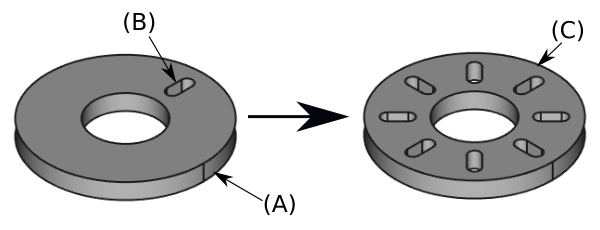
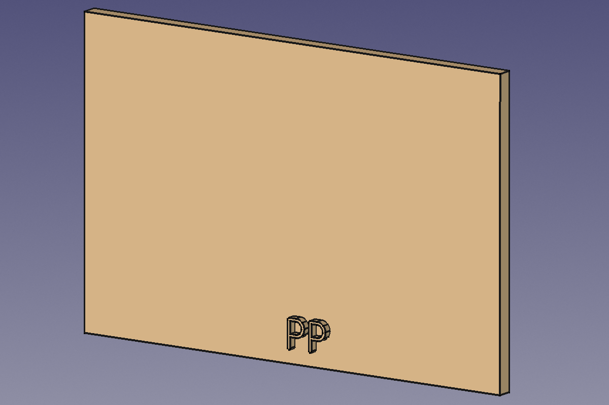
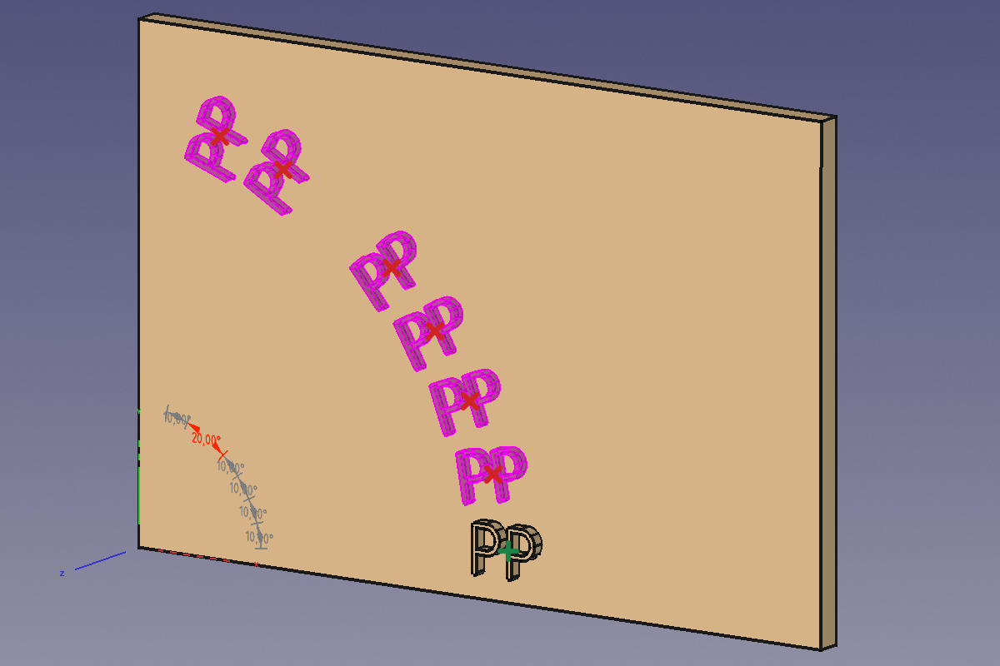
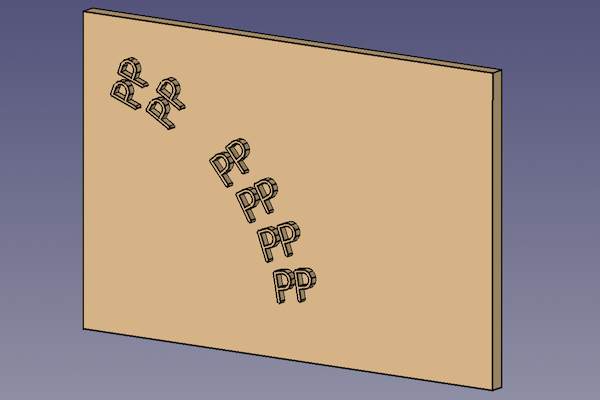

PartDesign PolarPattern/hr
|
|
| Menu location |
|---|
| Part Design → Transformation Features → Polar Pattern |
| Workbenches |
| PartDesign |
| Default shortcut |
| None |
| Introduced in version |
| - |
| See also |
| PartDesign MultiTransform |
Opis
The  PartDesign PolarPattern tool creates a polar pattern of selected features or the active body introduced in 1.0.
PartDesign PolarPattern tool creates a polar pattern of selected features or the active body introduced in 1.0.


A slot-shaped pocket (B) made on top of a base pad (A, also referred to as support) is used for a polar pattern. The result (C) is shown on the right.
introduced in 26.3: This tool allows to disable individual pattern elements and to edit each angle individually.
  


Existing rectangular base feature with PP-shaped additive feature → "Polar Pattern" preview mode with deactivated original element (red x symbols deactivate elements, green + symbols reactivate elements) and an individually set second to last angle (grey dimensions: general angles, red dimension: individual angle) → Resulting solid (PolarPattern feature)
Kako koristiti
Create
- Optionally activate the correct Body.
- Optionally select one or more features in the Tree View or the 3D View.
- There are several ways to invoke the tool:
- Press the
 Polar Pattern button.
Polar Pattern button. - Select the Part Design → Transformation Features → Polar Pattern option from the menu.
- Press the
- If there is no active Body, and there are two or more Bodies in the document, the Active Body Required dialog will open and prompt you to activate one. If there is a single Body it will be activated automatically.
- The Polar Pattern Parameters task panel opens. See Options for more information.
- Press the OK button to finish.
Edit
- Do one of the following:
- The Polar Pattern Parameters task panel opens. See Options for more information.
- Press the OK button to finish.
Opcije
- Choose the mode:
- Transform body: Transforms the whole base feature's shape (default). introduced in 1.0
- Transform tool shapes: Transforms the individual tool shapes of selected features.
- To add features:
- To remove features:
- If there are several features in the pattern, their order can be important. See Ordering features.
- Axis:
- Press the
 button to reverse the direction of the pattern.
button to reverse the direction of the pattern. - Specify the axis reference:
- Normal sketch axis: The Z-axis of the sketch (only available for sketch-based features).
- Vertical sketch axis: The Y-axis of the sketch (idem).
- Horizontal sketch axis: The X-axis of the sketch (idem).
- Construction line #: A separate entry for each construction line in the sketch (idem).
- Base X-axis: The X-axis of the Body.
- Base Y-axis: The Y-axis of the Body.
- Base Z-axis: The Z-axis of the Body.
- Select reference…: Select a Datum Line in the Tree View or a Datum Line or edge in the 3D View.
- introduced in 1.0: Specify the angle Mode:
- Total Angle: If the angle is less than 360°, the occurrences are evenly distributed from 0° (first occurrence) to the given angle (last occurrence). If the angle is 360°, the occurrences are evenly distributed around the circle. For n occurrences an angle of 360° is equivalent to an angle of 360°*(1-1/n).
- introduced in 1.0: Angular spacing: Enter the angle from a given point on the first occurrence to the same point on the next occurrence. For n occurrences: TotalAngle=(n-1)*Spacing.
- Specify the number of Occurrences (including the original feature).
- Press the
- introduced in 26.3: The angle or offset and occurrence values can also be edited with On-View Parameters in the 3D View.
- If the Recompute on change checkbox is checked the view will update in real time.
Ordering features
If some of the selected features are additive and others subtractive, their order can have have an impact on the final result. You can change the order by dragging individual features in the list.

Effect of the feature order
Properties
Data
Base
- PodaciOriginals (
LinkList): A list of selected features. Will be ignored, if the PodaciTransform Mode property is set toWhole shape. - PodaciTransform Mode (
Enumeration):Features(default)Whole shape.
Part Design
- PodaciRefine (
Bool): Default isTrue. Refine shape (clean up redundant edges) after operations. - PodaciFuzzy Tolerance (
FloatConstraint): Default is-1.0. Fuzzy tolerance:- If value > 0: use the value
- If value = 0: leave default value
- If value < 0: determine value
PolarPattern
- PodaciAxis (
LinkSub): The axis of rotation for the pattern. This can be a datum axis, a sketch axis, a circular edge, or the normal of a planar face.- This is only used when the PodaciMode property is set to
Extent.
- This is only used when the PodaciMode property is set to
- PodaciReversed (
Bool): Default isFalse. Reverses the pattern direction from counter-clockwise (default) to clockwise. - PodaciMode (
Enumeration): Selects how the pattern is dimensioned.Extent: Uses the total angle from the first to the last instance.Spacing(default): Uses the angle between consecutive instances.
- Podaci (ReadOnly)Angle (
Angle): Default is360.0 deg. The total angle of the pattern, measured from the first to the last instance. - PodaciOffset (
Angle): Default is50.0 deg. The angular distance between each instance of the pattern.- This is only used when the PodaciMode property is set to
Spacing.
- This is only used when the PodaciMode property is set to
- PodaciSpacings (
FloatList): Default is[-1.0]. A list of custom angular spacings between instances. If a value is -1, the global 'Offset' is used for that spacing. The list should have one less item than the number of occurrences. - PodaciSpacingPattern (
FloatList): Default is[0.0]. Defines a repeating pattern of spacings for the second direction. For example, a list of [10, 20] will create alternating spacings of 10mm and 20mm. (Experimental and subject to change. To enable this in the UI you can add a boolean parameter 'ExperiementalFeature' in Preferences/Mod/Part) - PodaciOccurrences (
IntegerConstraint): Default is2. The total number of instances in the pattern, including the original feature.
Transformation
- PodaciSuppressed Indices (
IntegerList): Indices of pattern instances that are suppressed. introduced in 26.3
Limitations
- Any shape in the pattern that does not overlap the parent feature will be excluded. This ensures that a PartDesign Body always consists of a single, connected solid.
- The PartDesign patterns are not yet as optimized as their Draft counterparts. So for a large number of instances you should consider using a Draft PolarArray instead, combined with a Part boolean operation. This may require major changes to your model as you are leaving PartDesign and therefore cannot simply continue with further PartDesign features in the same body. An example is shown in this Forum topic.
- A pattern cannot be applied directly to another pattern, be it polar, linear or a mirror. For this you need a PartDesign MultiTransform.
- Helper tools: New Body, New Sketch, Attach Sketch, Edit Sketch, Validate Sketch, Check Geometry, Sub-Shape Binder, Clone
- Modeling tools:
- Additive tools: Pad, Revolution, Additive Loft, Additive Pipe, Additive Helix, Additive Box, Additive Cylinder, Additive Sphere, Additive Cone, Additive Ellipsoid, Additive Torus, Additive Prism, Additive Wedge
- Subtractive tools: Pocket, Hole, Groove, Subtractive Loft, Subtractive Pipe, Subtractive Helix, Subtractive Box, Subtractive Cylinder, Subtractive Sphere, Subtractive Cone, Subtractive Ellipsoid, Subtractive Torus, Subtractive Prism, Subtractive Wedge
- Boolean: Boolean Operation
- Dress-up tools: Fillet, Chamfer, Draft, Thickness
- Transformation tools: Mirror, Linear Pattern, Polar Pattern, Multi-Transform, Scale
- Additional tools: Shape Binder, Involute Gear, Sprocket, Shaft Design Wizard
- Context menu: Suppressed, Set Tip, Move Object To…, Move Feature After…
- Preferences: Preferences, Fine tuning
- Getting started
- Installation: Download, Windows, Linux, Mac, Additional components, Docker, AppImage, Ubuntu Snap
- Basics: About FreeCAD, Interface, Mouse navigation, Selection methods, Object name, Preferences, Workbenches, Document structure, Properties, Help FreeCAD, Donate
- Help: Tutorials, Video tutorials
- Workbenches: Std Base, Assembly, BIM, CAM, Draft, FEM, Inspection, Material, Mesh, OpenSCAD, Part, PartDesign, Points, Reverse Engineering, Robot, Sketcher, Spreadsheet, Surface, TechDraw, Test Framework
- Hubs: User hub, Power users hub, Developer hub